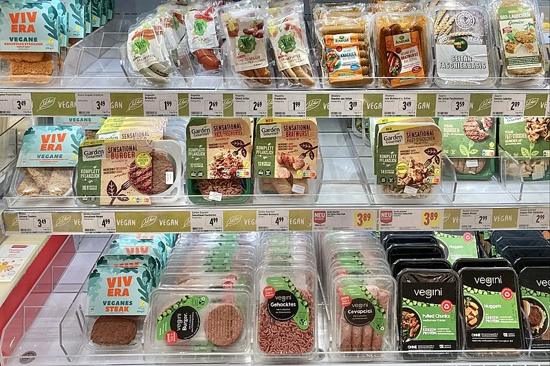

ALTERNATIVES VARIADES, NUTRITIVES I SABOROSES 
En l'alimentació tradicional, la carn és considerada una font de proteïnes i de ferro. Afortunadament, hi ha molts aliments vegetals diferents amb grans quantitats d'aquests nutrients. Està establert científicament, per part de múltiples institucions professionals de salut, que una alimentació 100% vegetal equilibrada és bona per a la salut en qualsevol etapa de la vida.
Les alternatives als productes carnis, com les imitacions ja preparades, són cada vegada més comunes en els supermercats i permeten substituir productes tan benvolguts com les delícies i fer delicioses broquetes, hot-*dogs, etc.
Finalment, l'alimentació vegetal obre la porta a opcions delicioses, sanes i insospitades, i és molt més simple i saborosa del que pensem. La gastronomia vegana, actualment en clar augment, és la prova!
PROTEÏNES I FERRO EN UNA ALIMENTACIÓ 100% VEGETAL? FÀCIL! 
Les proteïnes
Simplement menjant en quantitats suficients segons la fam que tinguem, la ingesta de proteïnes està garantida. Cereals (blat, civada, arròs...), llegums i fruita seca són aliments comuns que ens aporten quantitats de proteïnes més que suficients. El tofu, el seitan i les hamburgueses veganes també són rics en proteïnes. La falta de proteïnes, de fet, és simplement una idea que prové de la falta d'informació: les úniques persones amb manca de proteïnes en països occidentals són aquelles que no mengen en suficient quantitat i tenen una alimentació desequilibrada. Les proteïnes animals tenen reputació de ser més completes que les proteïnes vegetals, però aquesta diferència és negligible en cas de menjar una dieta variada.
EL HIERRO
Els llegums, els cereals integrals, el tofu i algunes verdures verdes contenen quantitats de ferro comparables a les de la carn vermella! El ferro hemínico que trobem en la carn s'absorbeix normalment amb més facilitat que el ferro no-hemínico els vegetals, però això no té per què ser un avantatge, ja que se sospita que el ferro hemínico és una de les causes dels problemes de salut que provoca la carn vermella, com l'augment del risc de patir càncer colorectal. Per a aprofitar al màxim el ferro dels aliments vegetals, acompanyeu-los amb un aliment ric en vitamina C: una peça de fruita, una mica de suc de llimona per a donar gust...
LA SOIA
Rica en proteïnes i en ferro, la soia s'usa per a nombroses receptes vegetals i pot servir com a alternativa a la carn en forma de tofu, proteïna de soia texturada o hamburguesa vegana. La soia és un dels aliments més estudiats científicament, i està demostrat que les isoflavones, sovint dites fitoestrógenos, no tenen cap efecte nociu sobre el nostre sistema hormonal. D'altra banda, forma part de la dieta tradicional de diversos països asiàtics des de fa milers d'anys.
www.infovegana.comGUSTOS I AROMES
Hi ha aliments vegetals i receptes veganes amb gustos intensos. Alguns d'aquests aliments aporten el benvolgut sabor umami, que s'assembla al de la carn i que forma part dels cinc sabors bàsics juntament amb el dolç, l'amarg, el salat i l'àcid. Aquest gust permet potenciar el sabor de les nostres receptes. No dubtis a usar aquests aliments i combinar-los per a donar aquest gust als teus plats!
Descobreix els gustos umami:
Els essencials!
- Salsa de soia, miso, salsa tamari
- Galledes de brou de verdures
- Llevat nutricional
- All, cebes, porros
Els clàssics!
- Concentrat de tomàquet, quètxup, tomàquets madurs
- Suc de raïm, vi (per a cuinar)
- Vinagre balsàmic
Els exòtics!
- Algues: nori, kombu, wakame
- Bolets, especialment les shiitake

ON TROBAR ALTERNATIVES A LA CARN? 
Podem trobar la majoria d'alternatives a la carn basades en imitacions vegetals (delícies, hamburgueses, mandonguilles, kebabs, salsitxes, patés, salami, pollastre, etc.) en supermercats. Trobem aquests productes en la secció de productes frescos, normalment en un apartat propi però a vegades també al costat de la xarcuteria o dels plats preparats. Entre aquestes imitacions estan les hamburgueses Beyond Meat, que imiten el sabor de la carn a la perfecció, o les tires de pollastre de Heura, una autèntica delícia!
Les botigues ecològiques també solen tenir una àmplia gamma de carns vegetals, així com diverses varietats de tofu i de proteïnes de soia texturades. També podem trobar el tofu ferm o sedós en botigues asiàtiques. D'altra banda, cada vegada més restaurants ofereixen carns vegetals en els seus menús. Ja podem trobar hamburgueses veganes fins i tot en McDonald's, Burger King, Pans & Company...
Quant als llegums, els podem trobar fàcilment en supermercats, botigues ecològiques o verduleries. En botigues ecològiques, podem trobar en diferents formes: enters o en forma de flocs secs, farina, pasta... Finalment, les botigues veganes s'estan expandint i també ofereixen nombroses alternatives als productes d'origen animal.
LES PROTEÏNES DE SOIA TEXTURADA: TOT SÓN AVANTATGES! 
Les proteïnes de soia texturades (o PST) són molt riques en proteïnes. Igual que la pasta, les trobem en forma deshidratada. El seu sabor subtil obre la porta a moltes oportunitats, ja que s'impregnen del sabor de la nostra recepta. Les podem trobar en forma de petits granulats, de trossos més o menys grans i fins i tot d'hamburgueses senceres. Com el seu volum es multiplica per 3 a hidratar-les, 25 grams secs són suficients per a una persona per a arribar a una aportació proteica satisfactòria per a un menjar. A més, no són gens cares!
Per a hidratar-les, les hi ha de deixar uns 15 minuts en aigua tèbia o calenta, en un brou de verdures o en llet de soia. Després n'hi ha prou amb colar-les i afegir-les a la seva recepta. També pots colar-les i assecar-les i després fregir-les amb oli i salsa de soia, espècies, salsa de tomàquet, etc. Les podem utilitzar com a substitut de la carn picada en qualsevol recepta, i són ideals per a preparar bolonyeses, xilis, salses...
LES CARNS VEGETALS, LLISTES PER A SER CUINADES! 
Pràctiques i saboroses, les carns vegetals són normalment molt riques en proteïnes i constitueixen una font molt interessant d'aquest nutrient. Són productes ideals per a quan tenim poc temps per a cuinar o per a quan volem veganitzar alguns menjars com una barbacoa o un pastís de carn. El tofu fumat i les salsitxes veganes, tallats en trossos petits en pastissos, quiches o amanides, o saltats amb verdures o arròs, aporten un sabor fumat que recorda al dels chicharrons. Els seus gustos, textures i preus varien d'una marca a l'altra; no dubtis a provar unes quantes si no has quedat satisfet amb la primera.
EL TOFU, LA VARIETAT INACABABLE 
El sabor neutre del tofu estàndard li permet impregnar-se de múltiples gustos i de formar part de nombroses receptes salades i dolces! També trobem cada vegada més tofus ja condimentats, fumats o especiats, saborosos i molt pràctics, ja que ja estan llestos per a poder-los menjar en entrepans, amanides, etc. El tofu ferm és molt simple i ràpid de preparar. N'hi ha prou amb tallar-ho en galledes o tires de la grandària desitjada o de xafar-lo a grosso modo i després fer-lo marinar en salsa de soia, mostassa o espècies abans de passar-ho uns minuts per la paella. Tofu a la brasa, saltat, en broquetes, verdures farcides amb tofu, tofu amb pebrot i tomàquet, salsa de tofu amb mostassa, salsa de tofu amb nata de soia... l'únic límit als seus usos és la nostra imaginació! El tofu sedós, tou i untuós, es pot usar en receptes com a pastís de formatge, terrines, flams, rebosteria, etc.
EL SEITAN, SIMPLEMENT IMPRESSIONANT 
No per res se'n diu també la carn vegetal! La seva textura s'assembla a la de la carn i li permet substituir-la favorablement en nombroses receptes. Moltes carns vegetals són fetes a base de seitan, ja que el seu gust, bastant neutre, permet assaonar-ho i fumar-ho per a fer receptes saboroses. També és molt ric en proteïnes, ja que està fet a partir de proteïna de blat. Tradicionalment utilitzat a Àsia des de fa segles, avui dia podem trobar seitan els supermercats en diverses formes diferents, i fins i tot podem fer a casa.

(RE)DESCOBRIU ELS LLEGUMS ü´õ
Nutritius, beneficiosos per a la nostra salut, barats, variats
Rics en proteïnes, en ferro i en fibra, barats, nutritius: els beneficis dels llegums per a la salut són nombrosos i fan d'elles un aliment de primer nivell! Mongetes vermelles, blanques, negres, frijoles, faves, cigrons, pèsols, llenties verdes, llenties vermelles... centenars de varietats són conreades i consumides des de fa milers d'anys, i han donat lloc a receptes de renom: falàfel, hummus , cuscús, tempeh, dahl, tacs, etc. Podem trobar llegums molt fàcilment en llaunes o en pots de conserva, llestos per a poder-los menjar, perfectes per a preparar un deliciós hummus en pocs minuts. Les farines de cigrons o de llenties són pràctiques per a preparar terrines, blinis o cardis o per a incorporar-les a les pastes per a fer coques o pastissos. També en forma de flocs ben digeribles, podem afegir els pèsols, els cigrons i la soia a diverses receptes: sopes, cardis vegetals, gratinats... amb 10 minuts de cocció és suficient.
Les pastes a base de llenties, cigrons o pèsols també existeixen i són una manera excel·lent de consumir llegums. Les podem coure en 3 minuts i usar-les com les pastes normals i corrents.

Basat en contingut original de L214